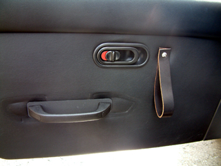
こっちを閉めると、そっちが開いちゃう、精巧に作られた桐箪笥のような仕様？？になってき ました。 RECARO SR-3 は純正のドア・アームレストを取り外さないとぶつかって付かないので、 ＪＥＴ・ＳＥＴで取り外してくれました。ドア・アームレストの代わりに小さなドア・ ハンドルに交換することも可能なのですが、そのときたまたま在庫がなかったので後から 送ってもらうことになりました。でもこのドア・ハンドルは位置的に、ドアを閉める時に 引っ張るには使いにくいので、ドア閉め用の引っ張り紐だけ自作することにしました。 この「ドア閉め用の紐」はドアの重さもあって、結構負担がかかるところなので、少し 厚みのある革紐（ベルトみたいな感じ）で作りました。 うーん、アームレストの跡をなんとかしたいな・・
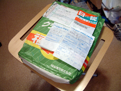 |
そうこうしているうちに、ＪＥＴ・ＳＥＴからRECAROの交換用ハンドルが届いた。 | ||||||
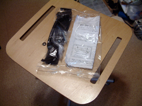 |
写真のようなセットが２セット入っていた。 | ||||||
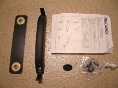 |
ハンドル本体とプレート、ネジ類と目隠し用の丸いやつに、説明書。 あ、今回はこのハンドルの取り付け方は書いていませんのでこの説明書をご参考に・・ | ||||||
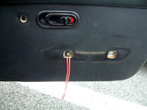 |
ＪＥＴ・ＳＥＴでアームレストを取り外した際、佐崎さんが 即席で作ってくれた、ドア閉め用の紐（コード）レーシー仕様？！ | ||||||
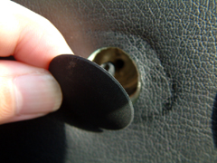 |
付属の目隠しはドアロック横の穴を隠すために使うらしい。 なんでもすごく入れにくいんだとか。でも今回はここに引っ張る紐を 付けるので、これは使わない。 | ||||||
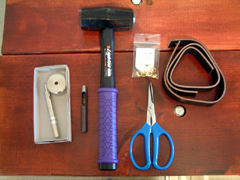 |
写真のような材料と工具を使用します。工具は、ハトメ抜き、ハトメ(No.500)用圧着具、
スニブ、ハンマと写真にはないですがNo.2のプラスドライバです。材料のサイズは下記の
通りですが、製作するドア閉め用の紐はかなり負担の掛かる部分なので、厚みのある丈夫な
革紐を選びました。
|
||||||
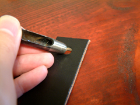 |
まず、ネジを取り付けるためのハトメ用にハトメ抜きをします。写真は机の上で撮影して いますが、下に捨て木を敷くか、コンクリート等の上でやった方がいいでしょう。 | ||||||
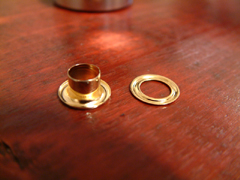 |
これが取り付けるハトメ（左）と対になるリング（右）です。 | ||||||
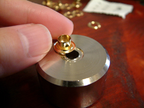 |
ハトメ圧着具の台座にハトメをのせます。 | ||||||
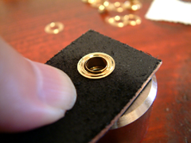 |
次にハトメ抜きで穴を開けた革紐をのせ、その上にリングをのせます。 | ||||||
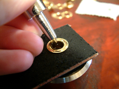 |
センターポンチのような形をしたハトメ圧着具のあて具の方を穴に差し込みます。 | ||||||
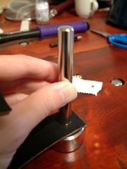 |
ハンマーで叩いて圧着します。 | ||||||
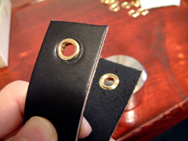 |
革紐を折り返して、丁度同じ位置に来るように反対側もハトメを付けます。 | ||||||
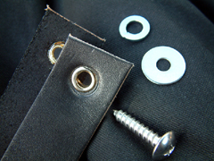 |
ステンレスのネジとワッシャでドアに取り付けます。 | ||||||
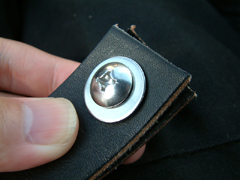 |
表側 | ||||||
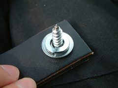 |
裏側 | ||||||
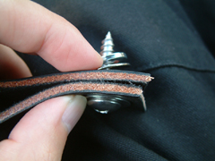 |
このようにワッシャで革紐を挟み込んで取り付けると、革紐の穴の周囲にかかる 負担が低減されます。 | ||||||
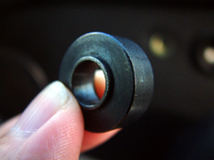 |
これがもともとアームレストを固定するのに使われていた鉄製？のスペーサです。 | ||||||
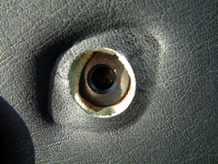 |
まずスペーサを穴にもどします。中に落っこちないように注意。 | ||||||
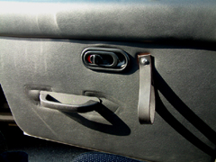 |
その上から革紐をつけます。あとRECAROのドア・ハンドルも付けて完成です。 |


革紐は長めの仕様なので、標準のドア・アームレストよりも閉めやすい感じ。 でも既にワッシャの周囲がストレスで傷んできているように見える・・革のワッシャとかを 作って挟んだ方がいいかもしれないけど、しばらく様子見。
ｂｙ すすたわり